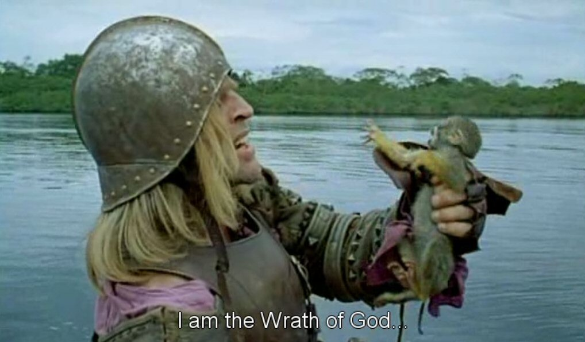

Monday, December the 12th, 2011
back to: title, date or indexes
Today's advent calendar picture shows Klaus Kinski (1926–1991) explaining himself to a monkey (dates unknown). It is a still from the magnificent Aguirre, The Wrath Of God (Werner Herzog, 1972), a film which I watch about once a year, and always find absolutely dazzling.
